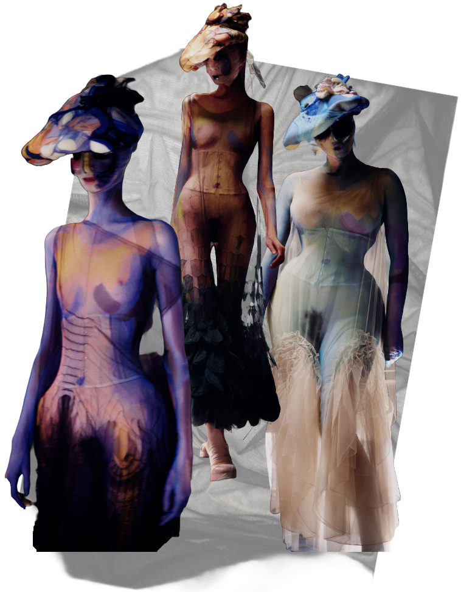
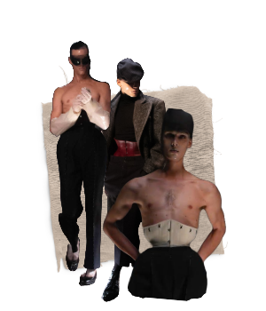

The Designs:John Galliano
The designs featured twisted tailoring, masterful deconstruction, a play on proportions,fusing the romantic with the macabre. With Galliano's fascination with historical dress and decay on full display with corsetry and the layering of carefully distressed fabrics.
The collection was innovative in that it made temporary adjustments like putting up a collar or hiking up a trouser by permanently cutting into the garments to reshape silhouettes, a technique Galliano called “emotional cutting.” Wool coats and jackets were shrunk by boiling. With some garments taking up to nine months to make.
In this collection, black was omnipresent. This time, the color appeared to have been John Galliano's inspiration, and black was applied to sensual gauze, tulle, and lace, allowing only certain shades of beige, brown, gray, and blue to express themselves. Drawing inspiration from Brassai's portraits from the 1920s and 1930s, the designer revisited the Belle Époque, the period that inspired him the most, highlighting an hourglass silhouette throughout the collection. Waists were exaggeratedly marked by 19th-century corsets, which were also worn by men.
